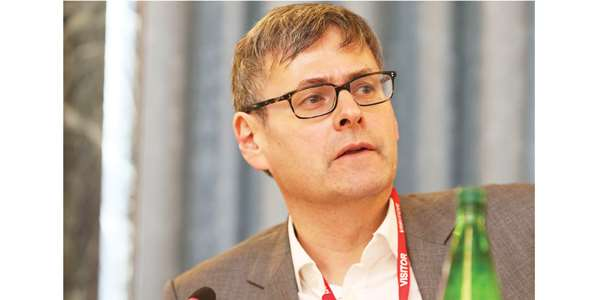

Original anglais: “Benedict under fire for intervention in dialogue with Jews”, paru le 18 juillet 2018 dans The Tablet.
Note liminaire du traducteur: Bien qu’il ne contienne aucune information nouvelle par rapport à celles que fournissent les textes que j’ai mis en ligne à ce jour sur le sujet, dans ma rubrique Echanges théologiques Juifs-Chrétiens, sur Academia.edu, j’ai cru utile de traduire cet article, en raison surtout des larges citations qu’il contient des propos du Dr Kessler sur cette affaire. En effet, sauf erreur de ma part, à ce jour, ce dernier n’a pas publié d’article spécifique à ce propos. L’importance de cet auteur ne saurait être sous- estimée, à preuve, entre autres, le fait que le Vatican lui ait donné tribune et que son texte ait bénéficié d’une large diffusion par l’agence de presse catholique Zenit, de Rome, qui a relayé et traduit son intervention, précédé du large chapeau suivant: « Juifs et catholiques, mêmes défis », par le Prof. Kessler. Intervention du Prof. Edward Kessler au Vatican, suite à la publication du document de la Commission pontificale pour les rapports religieux avec le judaïsme, intitulé Les dons et l’appel de Dieu sont irrévocables (Romains 11, 29), élaboré pour marquer le 50e anniversaire de la Déclaration conciliaire Nostra ӕtate et publié le 10 décembre 2015. » J’ai mis en grasses rouges les propos du prof. Kessler, qui expriment ses réticences et ses critiques concernant l’article controversé du pape émérite Benoît XVI, paru dans le numéro d’octobre 2017 de la revue Communio, sous le titre Gnade und Berufung ohne Reue). (Menahem R. Macina).
Des commentateurs juifs en vue ont critiqué un texte récemment publié par le pape émérite Benoît XVI, qui appelle à un dialogue judéo-chrétien plus approfondi; ils considèrent la contribution de Benoît XVI comme un «pas en arrière».
Intitulé "Grâce et vocation sans regrets", daté du 26 octobre 2017, et signé "Joseph Ratzinger - Benoît XVI", le texte n'était pas initialement destiné à la publication. En guise d’avant-propos à l'article publié dans Communio – revue théologique trimestrielle co-fondée par Joseph Ratzinger en 1972 –, le cardinal Kurt Koch, président du Conseil pontifical pour la promotion de l'unité des chrétiens, dit que cette réflexion lui avait été transmise et qu’il en avait encouragé la publication. Dans une interview avec l’agence de presse Kathpress, le rédacteur en chef de Communio, Jan-Heiner Tück, a estimé que le rejet actuel de la théorie dite de la substitution ou du remplacement, selon laquelle l’Eglise avait pris la place d’Israël dans l’œuvre du salut, doit être mieux examinée. La tradition théologique n'a pas parlé de "substitution", écrit Benoît XVI. [Le pape émérite] exerce aussi sa réflexion sur "l'alliance jamais révoquée" - une expression utilisée pour la première fois en 1980 par le pape Jean-Paul II. "Révoquer" n'est pas un terme biblique, souligne le pape émérite. Si utile que soit l'expression «alliance jamais révoqué» pour résoudre les impasses dans le dialogue, à long terme, la formulation biblique doit être privilégiée, qui parle de la fidélité de Dieu à ses promesses, a déclaré Benoît XVI.
La "question controversée" entre juifs et chrétiens est la question du Messie, poursuit Benoît XVI. L'attente juive du Messie était basée sur une compréhension politique d'un porteur de paix. Le point de vue chrétien était que Jésus "ne voulait pas directement apporter un nouveau monde de paix... mais montrer Dieu à l'humanité, y compris aux païens".
Selon [le pape émérite] Benoît, la fondation d'Israël en tant qu'État a été un fait politique et la conséquence de la Shoah, un signe de la fidélité de Dieu à son peuple, même s’il ne peut pas être directement légitimé par la Sainte Écriture et ne fait pas partie de l'histoire de la rédemption.
Edward Kessler (voir photo), fondateur et directeur exécutif du Woolf Institute, à Cambridge, a déclaré à The Tablet qu'il était "plutôt soulagé que cet essai ait été publié après le départ à la retraite du pape Benoît XVI". C'est un pas en arrière dans le dialogue entre chrétiens et juifs. Heureusement, le Dr Kessler a déclaré que son prédécesseur, Jean-Paul II, et son successeur, François, étaient plus positifs quant aux avantages pour les chrétiens de la rencontre avec le judaïsme vivant. Bien que Benoît XVI admette que le judaïsme joue un rôle positif dans l'histoire du salut après la venue du Christ, le Dr Kessler affirme que, "contrairement au pape François, il rejette la complémentarité des relations judéo-chrétiennes". Benoît XVI a également atténué le terme "irrévocable" dans sa réflexion sur "l'alliance irrévocable" entre Dieu et le peuple juif, a déclaré le Dr Kessler. "Ce terme (basé sur Romains 9-11), a été émis pour la première fois par Jean-Paul II et repris régulièrement depuis, il a servi de base à de nombreuses réflexions théologiques chrétiennes contemporaines sur les relations avec les juifs et le judaïsme." [1] Tandis que Benoît XVI soutient que l'État d'Israël doit être considéré uniquement comme un événement politique, le Dr Kessler affirme que, pour «la plupart des Juifs et pas seulement pour quelques chrétiens», il a une signification théologique. Dans son article [2] , le Dr Kessler prétend que le pape émérite n’est pas à la hauteur de la tâche fixée par les directives du Vatican de 1974 concernant la déclaration du Concile Vatican II sur les relations avec les religions non chrétiennes, Nostra Aetate, selon laquelle «les chrétiens doivent chercher à mieux connaître le contenu de la tradition religieuse du judaïsme, et s'efforcer d'apprendre par quels traits essentiels les juifs se définissent à la lumière de leur propre expérience religieuse ».
Texte mis en ligne sur Academia.edu, le 11 août 2018. Mis à jour le 05.02.21
[1] Le formule de Saint Jean-Paul II a été reprise par le Catéchisme de l’Eglise Catholique, n° 121, en ces termes: « L’Ancien Testament est une partie inamissible de l’Écriture Sainte. Ses livres sont divinement inspirés et conservent une valeur permanente (cf. DV 14) car l’Ancienne Alliance n’a jamais été révoquée. » (Note du traducteur du présent article, M. R. Macina).
[2] Je n’ai pas trouvé l’article auquel The Tablet fait allusion. Sauf erreur, je crois comprendre que les propos du Dr Kesslar, largement rapportés ici par la revue – dont il est l’un des contributeurs –, ont été recueillis au cours d’un entretien, vraisemblablement téléphonique. (Note du traducteur].